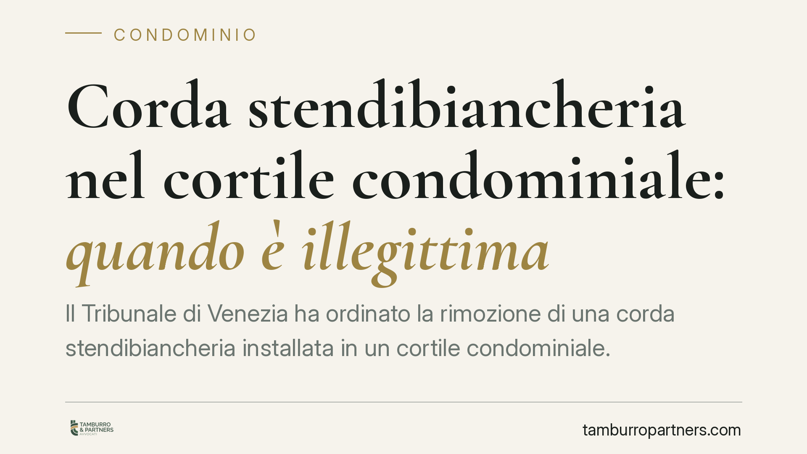

Corda stendibiancheria nel cortile condominiale: quando è illegittima
Il Tribunale di Venezia ha ordinato la rimozione di una corda stendibiancheria installata in un cortile condominiale. La decisione tocca tre profili distinti: invasione dello spazio aereo di proprietà altrui, lesione del decoro dell'edificio e molestia possessoria. Un caso apparentemente minimo che chiarisce i limiti all'uso degli spazi comuni.

Il caso
Una condòmina aveva installato una corda per stendere il bucato nel cortile dell'edificio. L'iniziativa, però, non era neutra: secondo la ricostruzione dei fatti, la corda era stata collocata per ostacolare l'attuazione di una delibera assembleare sgradita.
Altri condòmini si sono opposti e il Tribunale di Venezia ha ordinato la rimozione. La pronuncia risulta una sentenza di merito non massimata: non disponiamo degli estremi identificativi (sezione e numero), motivo per cui riportiamo il principio con la cautela dovuta e ci concentriamo sulle norme applicate, verificabili in modo autonomo.
Inquadramento normativo
La vicenda si articola su tre binari, ciascuno con un proprio fondamento nel codice civile.
Primo profilo: lo spazio aereo (art. 840 c.c.). La proprietà del suolo si estende allo spazio soprastante. Chi è titolare di un'area — o di una porzione di cortile in uso esclusivo — ha diritto a che nessuno vi collochi manufatti o strutture, corda compresa. L'invasione dello spazio aereo altrui integra una lesione del diritto di proprietà, a prescindere dall'ingombro materiale al suolo.
Secondo profilo: l'uso dei beni comuni e il decoro (art. 1102 c.c.). Ogni condòmino può servirsi della cosa comune, ma entro due limiti: non alterarne la destinazione e non impedire agli altri partecipanti di farne pari uso. La giurisprudenza di legittimità è costante nel ritenere che l'alterazione del decoro architettonico dell'edificio — cioè della sua estetica complessiva — costituisca una modifica non consentita dell'uso della cosa comune. Il vincolo è tanto più stringente quando l'immobile ha valore storico, come nel caso veneziano.
Terzo profilo: la molestia possessoria (artt. 1168-1170 c.c.). Chi subisce una turbativa nel possesso può agire con l'azione di manutenzione (art. 1170 c.c.) per farla cessare; nei casi di spoglio si ricorre invece alla reintegrazione (art. 1168 c.c.). La molestia non richiede la sottrazione del bene: basta un'interferenza che disturbi l'esercizio del possesso altrui. Nel caso di specie l'elemento decisivo è stato il fine perseguito — ostacolare una delibera — che ha connotato la condotta come consapevole e diretta a nuocere.
Implicazioni pratiche
Per il condòmino, la lettura combinata delle tre norme significa che anche un intervento di scarso impatto materiale può risultare illegittimo sotto più profili.
Una corda può violare la proprietà altrui pur senza toccare il suolo, se occupa lo spazio aereo di una porzione esclusiva. Può ledere il decoro, e quindi essere impugnabile ex art. 1102 c.c., anche se non arreca danno funzionale. E può configurare molestia possessoria quando è installata con finalità di ostacolo o ritorsione.
Il fine dell'intervento pesa. Un'attività ordinaria — stendere il bucato — cambia natura giuridica se diventa strumento per condizionare la vita assembleare. È la funzione concreta, non l'oggetto in sé, a orientare il giudizio.
Per chi subisce la turbativa, la scelta dell'azione va calibrata: la tutela possessoria (art. 1170 c.c.) ha tempi e presupposti diversi rispetto all'azione a difesa della proprietà o all'impugnazione della modifica ex art. 1102 c.c.
Cosa fare in concreto
- Verificate la titolarità degli spazi. Prima di installare qualsiasi struttura in cortile, accertate se l'area — o lo spazio aereo soprastante — è comune o in uso esclusivo di altri, consultando il regolamento e le tabelle.
- Valutate l'impatto sul decoro. Se l'edificio ha rilievo storico o estetico, un manufatto visibile può violare l'art. 1102 c.c. anche senza limitare l'uso altrui.
- Documentate la turbativa. Chi subisce l'interferenza raccolga foto datate, testimonianze e ogni elemento sul contesto, soprattutto se emerge un intento ostruzionistico.
- Individuate l'azione corretta. Distinguete tra tutela possessoria (artt. 1168-1170 c.c.) e tutela della proprietà o impugnazione ex art. 1102 c.c.: presupposti e termini non coincidono.
- Portate la questione in assemblea. Molti conflitti si risolvono in sede condominiale prima di arrivare al giudice; nei casi dubbi, una valutazione preventiva evita azioni mal impostate.
---
Contributo informativo a cura di Tamburro & Partners Avvocati. Non costituisce parere legale.
Ogni condominio ha una storia a sé.
Se gestisci un'amministrazione e vuoi un confronto su una specifica questione condominiale, scrivi allo studio. Ti rispondiamo entro un giorno lavorativo.